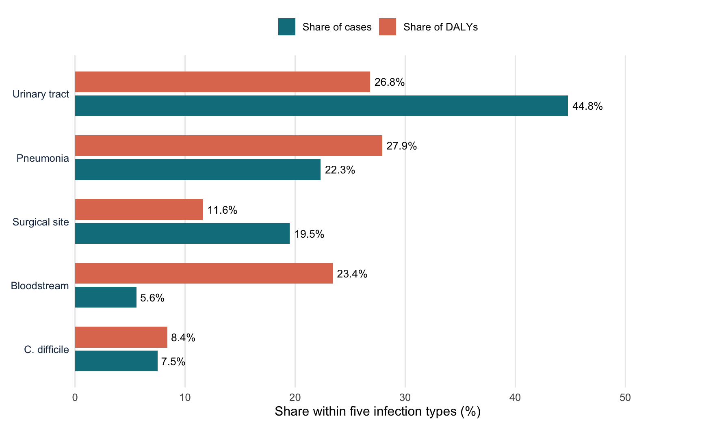

What Germany’s data reveals
Where did the evidence come from?
The findings come from a scientific study published by Zacher and colleagues in 2019, which examined the burden of healthcare-associated infections in Germany using hospital survey data collected in 2011–2012.
The researchers used a representative German survey involving 9,626 patients across 46 hospitals, alongside additional German and European hospital data.
They focused on five types of healthcare-associated infections:
- Urinary tract infections: Infections affecting the bladder or urinary system.
- Pneumonia: Lung infections acquired in healthcare settings.
- Bloodstream infections: Infections involving the blood.
- Surgical-site infections: Infections occurring around an area where surgery was performed.
- Clostridioides difficile infections: Intestinal infections that can cause severe diarrhoea.
Rather than just counting cases, the researchers estimated how often they occurred, how many deaths they caused and how much healthy life they destroyed.
Disability-adjusted life years (DALYs) was one important measure. One DALY equals one year of healthy life lost due to disease, disability or premature death.
This enabled the researchers to look at not only which infections were most common, but also which caused the most damage overall.
The most common infections were not always the most harmful
The scientists estimated about 478,222 health care-associated infections in Germany annually for five infection types. But it wasn’t only the number of infections.
UTI (urinary tract infections) accounted for around 44.8% of the estimated cases, making it the most prevalent type of infection. The pneumonia was the next most common infection with 22.3%, and surgical-site infections were the third most common with 19.5%.
However, on the big picture of health burden, the situation turned.
The estimated healthy years of life lost due to UTIs was approximately 26.8%. The highest was for pneumonia (27.9%).
The most striking difference was with regard to bloodstream infections. They were only a small proportion of cases (5.6%), but still caused about 23.4% of the total healthy years of life lost.
This discrepancy is important because the number of infections alone can give the impression of something not as big as it is.
For instance, UTIs were far more prevalent than bloodstream infections; however, bloodstream infections accounted for a relatively high proportion of the estimated health burden.
The results indicate the importance of looking at the incidence and severity of hospital infections, instead of just number of cases.
When frequency and harm tell different stories
Figure 1 compares how frequently each infection occurred with its share of the estimated health burden.
Source: Zacher et al. (2019). Percentages are based on reported estimates for five infection categories. Because the percentages derive from separately estimated totals, they do not sum exactly to 100%.
The contrast is particularly striking for bloodstream infections: they account for a small share of cases but a much larger share of the estimated loss of healthy life. This answers the second question raised at the beginning of the article: the most common infections were not necessarily the most harmful.
The bigger picture: How much harm did these infections cause?
Looking at the five infection types together reveals a substantial impact on public health.
As shown in Table 1, the researchers estimated nearly half a million infections each year. But the findings go beyond the number of patients affected.
An estimated 16,245 deaths were attributable to these infections. The researchers also estimated 248,920 disability-adjusted life years (DALYs), representing the combined years of healthy life lost through illness and premature death.
| Measure | Estimated annual impact |
|---|---|
| Healthcare-associated infection cases | 478,222 |
| Deaths attributable to infections | 16,245 |
| Healthy years of life lost (DALYs) | 248,920 |
These figures show why hospital infections are more than an issue of patient numbers. Their impact also includes premature deaths and the loss of years that people could otherwise have lived in good health.
However, these estimates describe a historical period. They should not be interpreted as the current infection burden in Germany.
What can we learn?
Germans have learned an important lesson: the most common infections are not always the most damaging.
The highest proportion of cases were urinary tract infections, and the highest proportion of healthy years of life lost were due to pneumonia. Infections in the blood were less prevalent but were overly represented in terms of the health burden.
These findings provide the answer to the question asked at the start of this article. The total number of infections is not an accurate reflection of the impact. To appreciate their seriousness, the mortality aspect needs to be explored, along with the lost healthy life.
This underlines the importance of taking account of the number and the severity of the consequences of infections in assessing burden of disease for hospitals and public health researchers.
The study conducted by Zacher et al. (2019) however, was from the last 12 years of history, 2011–2012. It is important that its estimates not be used as a description of current conditions, and the study does not provide any evidence on which prevention strategy would be best.
The big lesson: Examining the number of infections is just one way of understanding health impacts that may not be apparent.
Reference
Zacher, B., Haller, S., Willrich, N., Walter, J., Abu Sin, M., Cassini, A., Pachoua, D., Suetens, C., Denk, A., Gastmeier, P., Wieler, L. H., & Eckmanns, T. (2019). Application of a new methodology and R package reveals a high burden of healthcare-associated infections (HAI) in Germany compared to the average in the European Union/European Economic Area, 2011 to 2012. Eurosurveillance, 24(46), 1900135. https://doi.org/10.2807/1560-7917.ES.2019.24.46.1900135